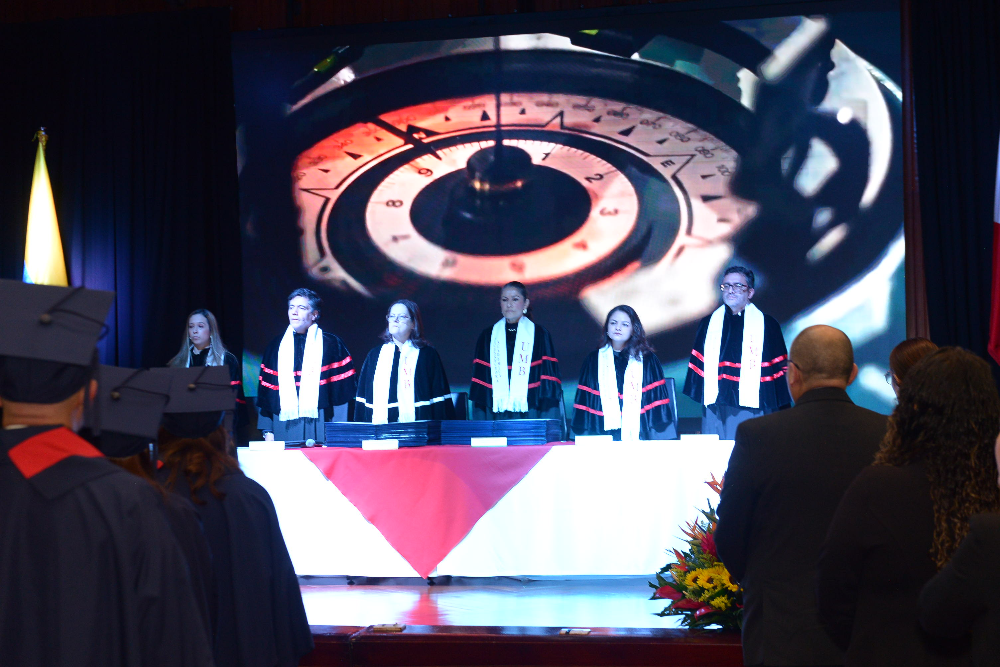
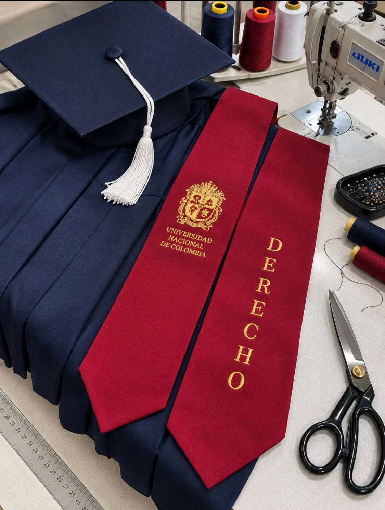

01 · Colegios
Colegios e instituciones educativas
Acompañamos ceremonias de grado de educación básica y media, coordinando togas, birretes, estolas, tallas y cantidades de acuerdo con las necesidades de cada promoción.
Solicitar propuestaVestuario académico para instituciones educativas
Servicio especializado de alquiler de togas, birretes, estolas y accesorios para colegios, universidades e instituciones educativas. Coordinamos cantidades, tallas, entrega y recogida para lograr una presentación uniforme y organizada en cada ceremonia.
Instituciones
Nuestra experiencia incluye el acompañamiento a instituciones educativas en Bogotá y diferentes ciudades de Colombia, coordinando el vestuario académico de acuerdo con las características de cada ceremonia.


Para quién es
Cada institución tiene protocolos, cantidades y necesidades diferentes. En Master Express coordinamos el vestuario académico, las tallas, los tiempos de entrega y la logística necesaria para lograr una presentación uniforme y organizada en cada ceremonia.
01 · Colegios
Acompañamos ceremonias de grado de educación básica y media, coordinando togas, birretes, estolas, tallas y cantidades de acuerdo con las necesidades de cada promoción.
Solicitar propuesta02 · Universidades
Soluciones de vestuario académico para facultades, programas, pregrados y posgrados, con coordinación institucional y una presentación uniforme para cada ceremonia.
Cotizar para universidad03 · Centros de formación
Atendemos ceremonias de graduación de instituciones técnicas, tecnológicas, academias y centros de formación, adaptándonos al número de graduandos y a los lineamientos de cada institución.
Coordinar ceremonia
Vestuario académicoVestuario académico
Proveemos togas, birretes, estolas y complementos para colegios, universidades e instituciones educativas, coordinando cantidades, tallas, entrega y recogida de acuerdo con la programación de cada ceremonia.
Asesoría institucional
Cada institución tiene una identidad y unas necesidades particulares para su ceremonia de grado. Nuestro equipo presenta personalmente las opciones de togas, birretes, estolas y complementos, y le asesora para encontrar la alternativa más adecuada para su institución.

Portafolio institucionalNuestro trabajo
Conozca algunas de las ceremonias de grado en las que Master Express ha acompañado a instituciones educativas, cuidando la uniformidad, presentación y coordinación del vestuario académico.
Cómo trabajamos
Nuestro servicio va más allá del alquiler de vestuario. Coordinamos previamente cada detalle y acompañamos personalmente a la institución el día del grado para garantizar organización, uniformidad y una excelente presentación.
Nos reunimos con la institución para conocer la fecha, número de graduandos, características de la ceremonia y requerimientos de vestuario.
Mostramos nuestro portafolio de togas, birretes, estolas y complementos, asesoramos a la institución y definimos la alternativa más adecuada para su ceremonia.
Coordinamos cantidades, tallas, vestuario y logística previa para que todo esté organizado antes del día del grado.
Nuestro equipo lleva el vestuario al lugar del evento, organiza y viste a los graduandos y, una vez finalizada la ceremonia, recibe nuevamente las prendas.
Experiencias institucionales
Nuestro trabajo se refleja en la organización, uniformidad y acompañamiento que brindamos antes y durante cada ceremonia de grado.
Master Express coordinó el vestuario de toda nuestra promoción. El día de la ceremonia su equipo estuvo presente, organizó las prendas y acompañó a los graduandos durante la preparación. Todo se vio uniforme y muy bien presentado.
Desde la primera reunión entendieron lo que necesitábamos para nuestra ceremonia. Nos presentaron las alternativas, coordinaron el vestuario y el día del grado estuvieron pendientes de todo el proceso. Para nosotros fue muy importante contar con un solo equipo responsable.
Teníamos graduandos con diferentes tallas y necesitábamos que todo se viera uniforme. Master Express coordinó previamente el vestuario y acompañó personalmente la preparación el día de la ceremonia. El proceso fue organizado y muy tranquilo para nuestro equipo.
Siguiente paso
En Master Express acompañamos a instituciones educativas en la planeación, preparación y presentación del vestuario académico para sus ceremonias de grado.
También puede comunicarse al +57 313 469 5020 / 313 469 1181 o escribirnos a gerencia@masterexpress.com.co